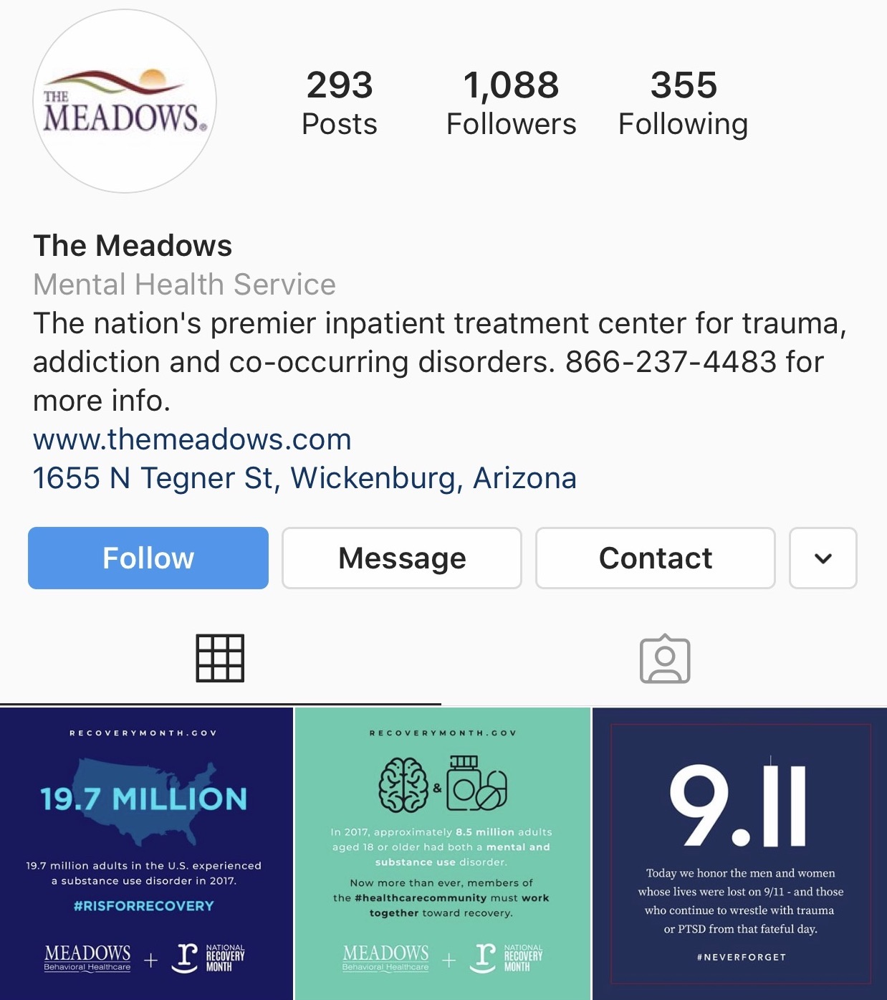

Research
I conducted research on Mending Strides Ranch, a nonprofit Equine-Assisted Psychotherapy center in Mint Hill, NC.
Primary Client Research

Research from Mending Strides Ranch Website
Mending Strides Ranch is a relatively new nonprofit that aims to “empower those suffering the effects of trauma, neglect and hardships through the use of rescued horses in Equine Assisted Therapies.” Mending Strides offers individual sessions that are customized for personalized treatment and growth, as well as camps that are focused toward different groups of people. All sessions at Mending Strides take place on the ground, with no riding involved.Mission Statement
To empower those suffering the effects of trauma, neglect and hardships through the use of rescued horses in Equine Assisted Therapies.
Vision Statement
To determine the unmet mental health needs in the nearby community, and use local professionals, volunteers and resources to accomplish the mission at our peaceful farm setting.
Programs
- Individual Therapy- for ages 7 through adult
- Operation Mind- for veterans seeking to restore balance to their lives after military service
- Forward Strides- for those seeking to continue progress after inpatient Substance Abuse Care
- Striding Out in Harmony- for those who are surviving Domestic Violence
- Mending the Angry Heart- for those who struggle with anger and want to take steps to find better balance

Equine Assited Psychotherapy
According to Mending Strides, "EAP is an experiential therapy with a team approach that includes a licensed credentialed mental health professional, a qualified Equine Specialist, and a horse or horses working together with the client during sessions. No horse expierence is neccessary and there is no riding involved. All work is done on the ground. In EAP sessions, participants learn about themselves by taking part in activities with the horses and then discussing how the activities parallel life’s challenges. Activities may help them find solutions to problems or work through unresolved issues. Clients can see their behaviors and how those behaviors affect self and others. It is a unique approach that goes beyond traditional methods to help restore balance to peoples lives."Benefits
The benefits of Equine Assisted Psychotherapy include: Increased Confidence, Self-Awareness, Trust, Anxiety Reduction, Assertiveness, Perspective, Impulse Control, Social Responsiblity, Self-Acceptance, Social Skills, Setting Boundaries, Communication, Empathy, Problem Solving Skills, and Stress Tolerance.
Conditions Treated
Conditions that can be treated using EAP include:- PTSD
- Substance Abuse
- Eating Disorders
- Addictions
- Domestic Violence
- Grief
- Anxiety
- Relationship Issues
- Anger Management
- Depresssion
Additional Client Research
These are additional screen captures of the current Mending Strides website, social medias, and advertisement.
Secondary Client Research

Equine-Assisted Psychotherapy
I began my secondary researching by looking into the field of Equine-Assisted Psychotherapy. Mending Strides Ranch is certified in Equine-Assisted Psychotherapy, so I wanted to have a better understanding of the field before researching any further. Equine-Assisted Psychotherapy has been popularized only in recent years, and is still one of the lesser known forms of treatment for a variety of mental and physical disorders and disabilities.I discovered through my research that Equine-Assisted Psychotherapy has been proven effective in cases of PTSD, eating disorders, depression, anxiety and more. The full benefits of Equine-Assisted Psychotherapy have yet to be discovered, but the information we do have proves that it is an effective treatment method in the majority of cases.
These screenshots are of two articles that detailed the benefits of Equine-Assisted Psychotherapy and the impact it can have on different groups of people.
Understanding the basics of Equine-Assisted Therapy allows me to have a better understanding of the goal behind Mending Strides Ranch, as well as its client base and target audience.

The Meadows Treatment Center
Next, I researched the nation's top therapy centers in order to better to see some of their design solutions in a similar field. I came across The Meadows, a facility in Wickenburg, Arizona that treats some of the same issues that Mending Strides aims to. The Meadows has a functional website that allows users to sign up for programs, browse the facility, and set up a phone call right from the home page. They also have a portion of their home page dedicated to the benefits of treatment. Additionally, The Meadows has an Instagram page with over 1,000 followers, on which they post about opportunities at The Meadows as well as statistics and inspiration related to the illnesses they treat.


High Hopes
I then began researching specifically Equine-Assisted Therapy Centers. In doing so, I found a surprising number of websites that were very similar to Mending Strides Ranch in terms of a lack of clarity and the absence of modern design elements. After doing some digging, I discovered High Hopes, an Equine-Assisted Therapies nonprofit with a more effective website. I found several elements on the High Hopes website that I believe to be effective in promoting donations and providing information on the services of the facility. The website is easy to navigate, making it accessible for clients and donors of all ages. The purpose of the website is clear, to inform users about the center and their practices, to raise funding, and to attract new clients and volunteers.
I found several elements on the High Hopes website that I believe to be effective in promoting donations and providing information on the services of the facility. The website is easy to navigate, making it accessible for clients and donors of all ages. The purpose of the website is clear, to inform users about the center and their practices, to raise funding, and to attract new clients and volunteers.
Additional Effective Site Examples
During my research, I found some additional examples of effective sites that can be drawn upon for the Mending Strides site.